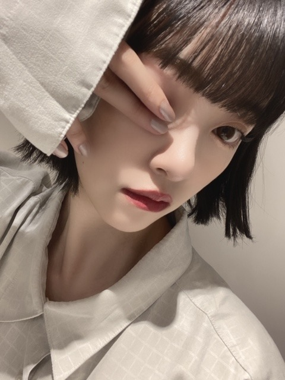
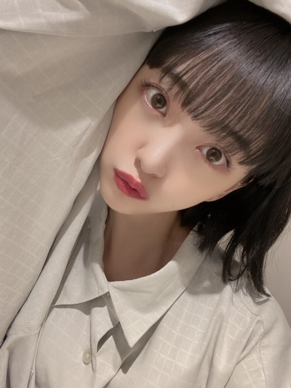
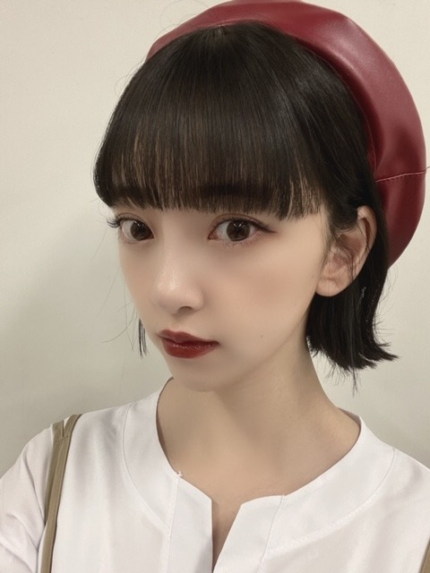

2020/0907Monいろんな〜
最近のメイク写真
あげます〜
こちらはblack make
黒のラインとマスカラでシックな感じにして
シャドウはブラウンとグレーを足して
アンニュイな雰囲気に
でもリップとチークでピンクみを足して
ピュアさも残してます



こちらはAutumn make
TGCの時のです
目尻にだけ 短く切ったつけまつげを
つけて目尻ポイントメイクにしてます
アイシャドウはオレンジとブラウンで
秋らしく
口元はブラウンとレッドでこってり
寝る前のYouTube音楽鑑賞たのしい
いろんな音楽聴こう〜〜
では
2020/09/07 16:24
コメント(233)
未央奈お疲れ様！！
ブログ更新ありがとう。
メイクによって色んな雰囲気を引き出せるよね。
最近Youtubeでジブリの音楽聞くのが自分の中のブーム笑
未央奈もジブリ好きだから絶対聞いてるよね。
ブログ更新ありがとう。
メイクによって色んな雰囲気を引き出せるよね。
最近Youtubeでジブリの音楽聞くのが自分の中のブーム笑
未央奈もジブリ好きだから絶対聞いてるよね。
こんにちはなざかり♪
ブログありがとう！
今、仕事の移動中〜
TGCの時のルージュ？リップ？は、
帽子の色と共鳴しているなぁと思っていたら、
ブラウンとレッドの合わせ技だったんだね〜
マットで良いね☆
生で観たかった〜
早くライブな現場が復活するといいね♪
では、仕事に戻ります！(￣^￣)ゞ
またね☆
わたる⊿
ブログありがとう！
今、仕事の移動中〜
TGCの時のルージュ？リップ？は、
帽子の色と共鳴しているなぁと思っていたら、
ブラウンとレッドの合わせ技だったんだね〜
マットで良いね☆
生で観たかった〜
早くライブな現場が復活するといいね♪
では、仕事に戻ります！(￣^￣)ゞ
またね☆
わたる⊿
ブログ更新ありがとう！
メイクめっちゃ似合ってるよ！
これからも色々頑張ってね！ ずっと大好き♡♡♡
メイクめっちゃ似合ってるよ！
これからも色々頑張ってね！ ずっと大好き♡♡♡
ブログ更新Thank You
可愛い子ちゃんﾟ+.ﾟ(´▽`人)ﾟ+.ﾟ
可愛い子ちゃんﾟ+.ﾟ(´▽`人)ﾟ+.ﾟ
とても可愛いです。
早く握手会では会いたいです。
早く握手会では会いたいです。
とても可愛い写真をありがとうございます。
未央奈さんの可愛い写真を見ると気持ちが落ち着きます。癒されます。
未央奈さんの存在が心の支えになってます。未央奈さん大好きです。
未央奈さんの可愛い写真を見ると気持ちが落ち着きます。癒されます。
未央奈さんの存在が心の支えになってます。未央奈さん大好きです。
黒い服だとモード系でかっこいいね
ブログ更新ありがとうございます。
メイクや美容には疎いので細かいことはわかりませんが、雰囲気が違うのはよくわかります。どの堀さんも可愛くて綺麗です。
でもAutumn makeはなんとなく秋っぽい感じがしますね。
素敵な写真ありがとうございます。
メイクや美容には疎いので細かいことはわかりませんが、雰囲気が違うのはよくわかります。どの堀さんも可愛くて綺麗です。
でもAutumn makeはなんとなく秋っぽい感じがしますね。
素敵な写真ありがとうございます。
ＧＯＯＤ
どのメイクの堀ちゃんも好きだわ～笑笑
ブログ更新ありがとう！
次も楽しみにしています！
ブログ更新ありがとう！
次も楽しみにしています！
メイクうますぎ‼️ずっと応援してまーーーす‼️
体調に気を付けてね♥️
アナスターシャとスカウトマン毎日聞いてます‼️
体調に気を付けてね♥️
アナスターシャとスカウトマン毎日聞いてます‼️
ブログ更新ありがとう！
どっちのメイクも可愛い！
強いて言えばblack makeの方が好みかも！
でもどっちも可愛くて、やっぱ選べない！って感じ！
どっちのメイクも可愛い！
強いて言えばblack makeの方が好みかも！
でもどっちも可愛くて、やっぱ選べない！って感じ！
すき
いろんなみおな
かわええんよおぉ〜！
ブログ更新ありがとう (^o^) き
お疲れ様
どのメイクも可愛くて魅力的！
どのメイクも可愛くて魅力的！
未央奈ちゃん！！
今日も可愛い〜
東京事変の女の子は誰でもって曲めっちゃ好きなの！未央奈ちゃん知ってるかな？♡聴いてみてね！
今日も可愛い〜
東京事変の女の子は誰でもって曲めっちゃ好きなの！未央奈ちゃん知ってるかな？♡聴いてみてね！
すちやよ♥️♥️
チャァオ～～!☆彡
みおちゃん❕❤️❤️❤️❤️❤️笑顔
ヘアスタイル素敵です❕❤️❤️❤️❤️❤️笑顔
今日朝、瞬間接着剤を使ったあと
コンタクトレンズをつけようとしたら
指先にまだ接着剤がついていて、レンズがくっついて
一瞬にして1万円のレンズが、おしゃかになって破れました！笑
(＠＾▽゜＠）ゞ❤️❤️❤️
❇️❇️おすまし！⚜️❇️⭐彡
アップ写真可愛いい、ありがと〜。
なに聞くのん〜？
めっちゃ大好きです
ライブ行きたいです
大好きです
ライブ行きたいです
大好きです
ブログ更新ありがとうございます！
未央奈ちゃんのメイクも服もめっちゃ好きです！
秋が近づいてきたので色々食べたりしたいですね〜
未央奈ちゃんのメイクも服もめっちゃ好きです！
秋が近づいてきたので色々食べたりしたいですね〜
ブログ更新ありがと〜
海外のファンです!
未央奈ちゃん好き〜
海外のファンです!
未央奈ちゃん好き〜
みおな
メイクでいろいろな表情作れるんだよね。
女の子って魔法使いだねっ。
メイクでいろいろな表情作れるんだよね。
女の子って魔法使いだねっ。
みおなしゅき！
カワイイ未央奈
本日も可愛すぎて、ありがとうございます
(。-ω-)zzz前のルーティ〜ン！おっちゃんは坂道46のYou tubeを見て寝ます ・・・・・夢に出てきてくれな・・・・い・・〜かな♪ヽ(´▽｀)/
未央奈ちゃんブログ更新ありがとう！
未央奈ちゃんのメイク紹介好きだよ！
未央奈ちゃんはメイクの紹介で説明が上手くて憧れる✨
未央奈ちゃんみたいな素敵な女性になりたいよ！
質問です
➀ブログはどうやって書いてますか？
➁メイクで今までやってきたメイクの中でお気に入りなメイクはありますか？
またね！
未央奈ちゃんのメイク紹介好きだよ！
未央奈ちゃんはメイクの紹介で説明が上手くて憧れる✨
未央奈ちゃんみたいな素敵な女性になりたいよ！
質問です
➀ブログはどうやって書いてますか？
➁メイクで今までやってきたメイクの中でお気に入りなメイクはありますか？
またね！
こんにちはこんばんは
今日も１日お疲れさまです
目尻に短いつけまつけるだけで
目の印象が変わるね
寝る前のMV鑑賞いいよね
でも俺は観ながら、聴きながら
よく寝落ちしてしまいます(。-ω-)zzz
では
ブログ更新ありがとう
あー可愛い
あー可愛い
いつもブログ見てます♫
堀ちゃんの独特な感じがクセになります。
3、4枚目の写真のリップの色がとってもかわいいな〜と思って、
教えてもらえたら嬉しいです！
堀ちゃんの独特な感じがクセになります。
3、4枚目の写真のリップの色がとってもかわいいな〜と思って、
教えてもらえたら嬉しいです！
TGC見たよー！！めちゃめちゃすごい！可愛すぎてやばかった！
メイクのこと詳しくないけど、どんな未央奈ちゃんも可愛い
奇遇にも寝る前のyoutube音楽鑑賞僕も楽しんでる
最近はずっと欅坂46の「誰がその鐘を鳴らすのか？」を聴いてるよ
未央奈ちゃんも欅坂の曲聴く？
乃木坂工事中での未央奈ちゃんがきいちゃんの所に駆けつける気持ちすごく分かります！！
それだけ大事な思いが伝わってきて感動しました
大好き
奇遇にも寝る前のyoutube音楽鑑賞僕も楽しんでる
最近はずっと欅坂46の「誰がその鐘を鳴らすのか？」を聴いてるよ
未央奈ちゃんも欅坂の曲聴く？
乃木坂工事中での未央奈ちゃんがきいちゃんの所に駆けつける気持ちすごく分かります！！
それだけ大事な思いが伝わってきて感動しました
大好き
black makeすごいね！
シャツの黒のインパクトに負けてないのに
メイクが主張しすぎてない
めっちゃかわいい！
TGCのAutumn makeは逆に
目尻に切ったつけまつげとか
リップはこってりとか
要所要所にアクセントをつけて
バランスを取ってるんだ～
ステージ映えもあるんだろうね！
個々のメイク術はすでに確立されてるものだけど
どれをチョイスして、どう組み合わせて
かわいくまとめるのかは
やっぱりみおなのセンスだなー
お洒落でかわいくて
みおなは本当に自慢の推しメン！
シャツの黒のインパクトに負けてないのに
メイクが主張しすぎてない
めっちゃかわいい！
TGCのAutumn makeは逆に
目尻に切ったつけまつげとか
リップはこってりとか
要所要所にアクセントをつけて
バランスを取ってるんだ～
ステージ映えもあるんだろうね！
個々のメイク術はすでに確立されてるものだけど
どれをチョイスして、どう組み合わせて
かわいくまとめるのかは
やっぱりみおなのセンスだなー
お洒落でかわいくて
みおなは本当に自慢の推しメン！
堀ちゃんお疲れ様！
堀ちゃんはほんとメイクがお上手ですね！
いろんなファッションのコーデが豊富で誰も似合っているのが羨ましいです。
体調に気をつけてお仕事頑張ってください。
堀ちゃんはほんとメイクがお上手ですね！
いろんなファッションのコーデが豊富で誰も似合っているのが羨ましいです。
体調に気をつけてお仕事頑張ってください。
僕もたまには音だけじゃなくてYOUTUBEで手軽にMV見ながら聴きたくなります！だからこそフルで残ってるMVは本当にありがたい笑
ちなみに最近は1DのMVを久しぶりに見てます
ちなみに最近は1DのMVを久しぶりに見てます
未央奈ー！ブログありがとうー！！
今日朝モバメ来て最高の1日の始まりだった！本当に嬉しいの！ありがとうね〜
メイク写真嬉しみ！見るの楽しいんだよね〜(｡･ω･｡)
片目！笑
そろそろ秋の空気感になってきたのかなと思いつつも、まだ残暑が続きそうだね〜
最後まで気を抜かないように暑さに負けないようにお互い頑張らないとだね〜
でも無理はしないでね〜(,,•﹏•,,)
私も夜な夜なYouTube観てるよ！笑
まいやんのYouTubeチャンネル観た？
世の中には自分の知らない音楽が沢山あるから調べて新しく知って聴くの楽しいよね！！！
今日朝モバメ来て最高の1日の始まりだった！本当に嬉しいの！ありがとうね〜
メイク写真嬉しみ！見るの楽しいんだよね〜(｡･ω･｡)
片目！笑
そろそろ秋の空気感になってきたのかなと思いつつも、まだ残暑が続きそうだね〜
最後まで気を抜かないように暑さに負けないようにお互い頑張らないとだね〜
でも無理はしないでね〜(,,•﹏•,,)
私も夜な夜なYouTube観てるよ！笑
まいやんのYouTubeチャンネル観た？
世の中には自分の知らない音楽が沢山あるから調べて新しく知って聴くの楽しいよね！！！
未央奈ちゃんいつ見ても綺麗！
男から見ても憧れるよ！
男から見ても憧れるよ！
堀ちゃんブログ更新ありがとう！
今日は撮影だったみたいだねお疲れ様でした
自分は寝ながら咀嚼音 聴いてるよ
今夜は音楽を聴きながら寝ます
では
今日は撮影だったみたいだねお疲れ様でした
自分は寝ながら咀嚼音 聴いてるよ
今夜は音楽を聴きながら寝ます
では
俺的には2つ目の方が好みです！
お疲れ様です!
ブログ更新ありがとう！
シャツかわいいね(^^)
たまにジャンル気にせず音楽聴いてるけどいろんな曲に出会えていいよね〜
シャツかわいいね(^^)
たまにジャンル気にせず音楽聴いてるけどいろんな曲に出会えていいよね〜
プログ更新ありがとうです❗❗
昨夜の乃木中、堀ちゃんの話のくだり最高に面白くて、何度も繰り返し見ました。( ☆∀☆) 日村さんをツボらせるなんてさすがです❗❗ 久しぶりに大好きな堀ちゃんの天然なエピソードをお上品に丁寧に話すのが見れて良かったです。癒されました❗( 〃▽〃)
昨夜の乃木中、堀ちゃんの話のくだり最高に面白くて、何度も繰り返し見ました。( ☆∀☆) 日村さんをツボらせるなんてさすがです❗❗ 久しぶりに大好きな堀ちゃんの天然なエピソードをお上品に丁寧に話すのが見れて良かったです。癒されました❗( 〃▽〃)
なんとも言えないかわいさ、、、なんだろーね？この気持ち。
みおなちゃん更新ありがとう
可愛いよー！
可愛いよー！
こんばんは。
可愛いすぎですよ！
今日いろんな事があり心身共に疲れ切ってるのですが、あまりの可愛いさに癒され涙が出てきましたよ。
ありがとうございます。
癒しの天使です！
癒しのコレクションが増えて幸せです、助けてくれて支えてくれてありがとうございます！
未央奈さんのファンで良かったです。出会いに感謝です。
秋のメイクは幅が広がり、様々な表情を見せてくれますね。
どちらかを選ぶとしたら、black makeが好きです。
これからも魅せてくださいね。
YouTube音楽鑑賞楽しんでますね。
止められなくなりますよね。
最低限の睡眠は取ってくださいね。
いろんな世界に触れて、感性を磨いて欲しいです。
お身体にはお気をつけてくださいね。
大好きですよ！
頑張って行きましょう！
可愛いすぎですよ！
今日いろんな事があり心身共に疲れ切ってるのですが、あまりの可愛いさに癒され涙が出てきましたよ。
ありがとうございます。
癒しの天使です！
癒しのコレクションが増えて幸せです、助けてくれて支えてくれてありがとうございます！
未央奈さんのファンで良かったです。出会いに感謝です。
秋のメイクは幅が広がり、様々な表情を見せてくれますね。
どちらかを選ぶとしたら、black makeが好きです。
これからも魅せてくださいね。
YouTube音楽鑑賞楽しんでますね。
止められなくなりますよね。
最低限の睡眠は取ってくださいね。
いろんな世界に触れて、感性を磨いて欲しいです。
お身体にはお気をつけてくださいね。
大好きですよ！
頑張って行きましょう！


かわいすぎます！
雰囲気がよすぎ！